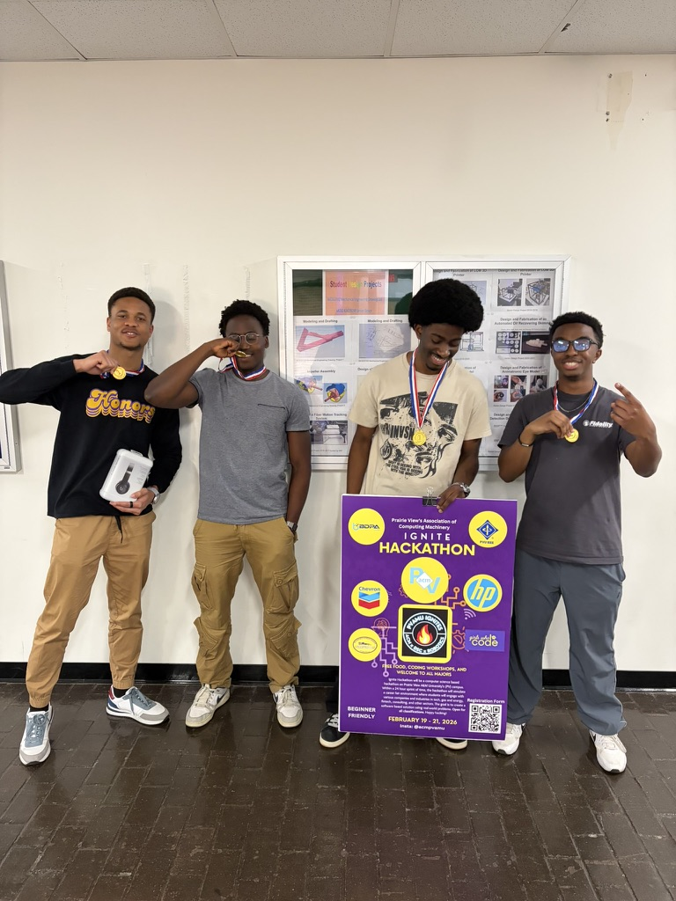

Shavaughn's Tech Blog
Why I Lost My Hobbies
And how I'm fighting against that for my side projects
One thing that I’ve learned over the years I’ve been learning programming is that the best way to become a better engineer is to actually engineer software. Being able to take a problem, figure out the root cause, determine a solution to it, then plan, build, test, and release that solution has always been and will always be the job. This skill can only be honed by actually going through and applying it. Gaining knowledge of new technical concepts is always important. It gives you a broader toolbox, and improves your ability to understand the tradeoffs of the decisions you’re making. However, there’s no use in this if you never see the places where these concepts can be applied. At that point, it’s just trivia.
Any computer science class worth taking will have at least one project. Even extremely theoretical classes such as Discrete Math, Computer Organization, or Operating Systems will give you some way to apply what you’ve learned. Whether you put effort into that application is ultimately up to you, and determines how much understanding you actually walk away from the class with. I’m not coming from the point of view of an expert. I’m still a CS student and learning how things work, but if I can be certain of one thing, it’s that my greatest learning experiences have been from actually building out these projects. Whether it’s an intern project, a research project, a hackathon project, a class project, or even just a personal project, I’ve always walked away having learned a bunch of new things.

That being said, I often hear the advice that, for those wanting to break into tech, the best way to do so is by building projects. To be honest, I think that’s outdated advice. With AI being able to write code so quickly, simply having built a project is not very meaningful. I think that the focus should be on building projects that actually solve a problem for real users. This is a better showcase of your engineering prowess. But once you’re in a mindset of building a project with the goal of getting hired, the project is already losing value.
I have countless projects that I started, but I never saw through. And the common factor between all of those projects was that I was building them with the sole goal of using them to further my career. I didn’t care about solving a problem. I didn’t care about learning. I wasn’t building the project to make anyone’s life easier. And as a result, I rushed through the process, and by the end, I didn’t even know what was going on. I had no reason to care about the project I was building. There was no joy in building. And I can tie this back to how I lost many of my hobbies.
When I was a kid, there were so many avenues I explored. I played multiple sports, I played the guitar, I tried 2d, 3d, and stop motion animation. I wrote books and comics, I made video games, board games, and card games. I made YouTube videos, I rode the skateboard, I made origami, and experimented on paper planes. And I was doing it purely for fun. Through that, I built real skill in some of these areas. My initial interest in building video games actually impacted my decision to study computer science. But then, as I started getting older, a dangerous thought came in: “How are you going to make money from this?” All of a sudden, my main priority was no longer the joy I found in creating, or the learning I was doing. Now, it was purely how much output I could produce. This mindset of constantly needing to produce single-handedly killed 90% of my hobbies. The main things that remain at this point are Pokemon, basketball, and coding. And I don’t even know if coding should count, because that’s a career. That’s the one thing that I actually do need to be making money from.
Money is a real need. The amount of income you receive can, and likely will have direct impact on your quality of life. That said, when you’re in a position like mine, and have the opportunity to earn money from something you simply love doing, you can’t let your joy be killed by the career. You can’t let coding, the hobby, be killed by coding, the job. One statement that I’ve been using to ensure that I continue building just for the sake of learning and enjoying the craft is the following: “Not every project you build has to be original, make money, or further your career. Sometimes, you can build something purely for the sake of building it.” I’m not saying to use this in a professional setting. At work, what you’re building absolutely has to contribute to the company in some way shape or form, and ideally, that work should be helping you further your career as well. But when you’re just tinkering away at something in your free time, or you’re in the process of learning, detaching the craft from the outcome is something I’ve found to be very important.
Honestly, that’s part of why I started this blog. I wanted a place where I could share the things I learned from building something that may not matter. Something dumb like a bot that’s good at playing Pokémon TCG, or an app that compares your jump shot to NBA players, and finds out that you shoot like Michael Kidd-Gilchrist 😂. I think that little projects like those actually teach you more than most realize. Not every project should be for the sake of getting hired. Some should just be for the sake of getting better.